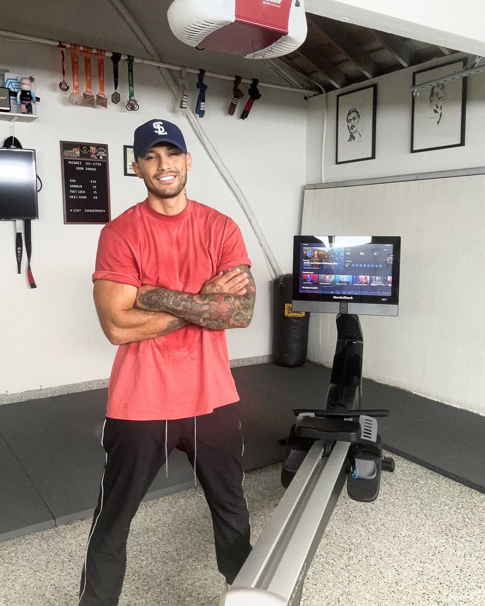

I’ve been working out for almost 8 years. Before that my life was surrounded by partying, drugs, and alcohol; it was all I knew and wanted. I had no idea of fitness exercising or nutrition. If anything, I used to make fun of people that were stuck in the gym because I thought it was a vanity game.
I was very self conscious of my weight especially because a lot of it went to my face. Having family friends and old flings tell me “you’re gaining weight” was a very unsettling feeling and on top of that I was new to being a father.
I started out by running, setting small goals like 1 mile this week, add a mile next week etc. I then saw online there was this mud run race filled with exciting obstacles and immediately was drawn to it. I started conditioning my body with more running, interval training and high endurance body weight movements. This is where I started to format my hybrid style of training you see today. I completed the mud run successfully and that was the fuel I needed to drive me where I am now. Fast forward a couple years to when I signed up on Instagram, not knowing it would be such a huge impact in my life. I started posting my unorthodox way of training and people started to really dig it. At first everyone thought I was a crazy “monkey jumping” up and down and doing pushups in a weird fashion, but they eventually realized that this style of training can help with so many outlets in their lives. I’m constantly learning. I started doing Brazilian Jiu Jitsu a year ago and now I’m doing MMA so I can do my first fight by the end of 2019. I always push myself always try to better and improve my weaknesses and I don’t think I could’ve done it without fitness and my family.
My son especially, for inspiring me to get off the couch and to be a better role model. He sees me workout and he responds to it genuinely. It’s like he wants to be like his old man and it’s a beautiful thing to see because 8 years ago he would’ve saw something different … and I have this journey to thank. If you’re someone who constantly wants to be motivated my movements will push you further than what you thought were capable. If your an athlete, martial artist or bad ass you can take my training and be 10 times more successful with my endurance and strength-building workouts. It took forever for me to learn and master various movements but once I finally did, I fell in love with blending and creating different variations of movement into my own style. I saw for myself through trial and error that it doesn’t need to be just one style of training but all of them fused together to be one. Today, I now am fortunate enough to be able to inspire millions of people everyday to not only feel better, but live an overall healthy lifestyle. Endless possibilities: that’s how I see fitness!